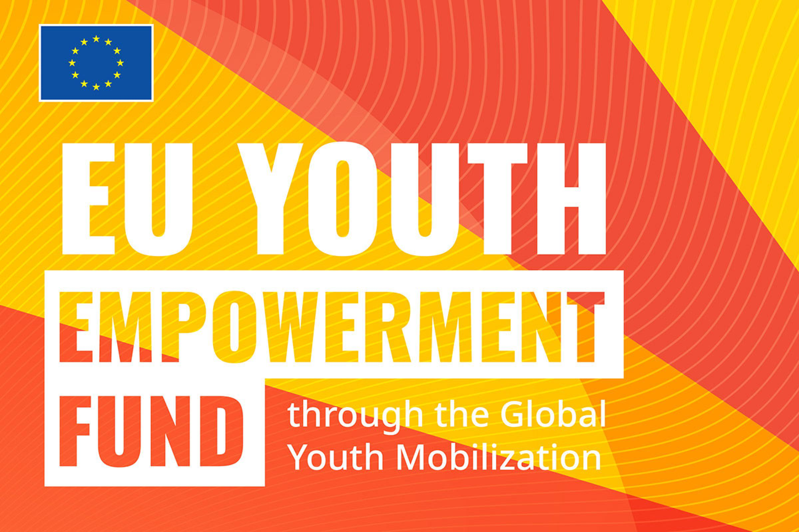
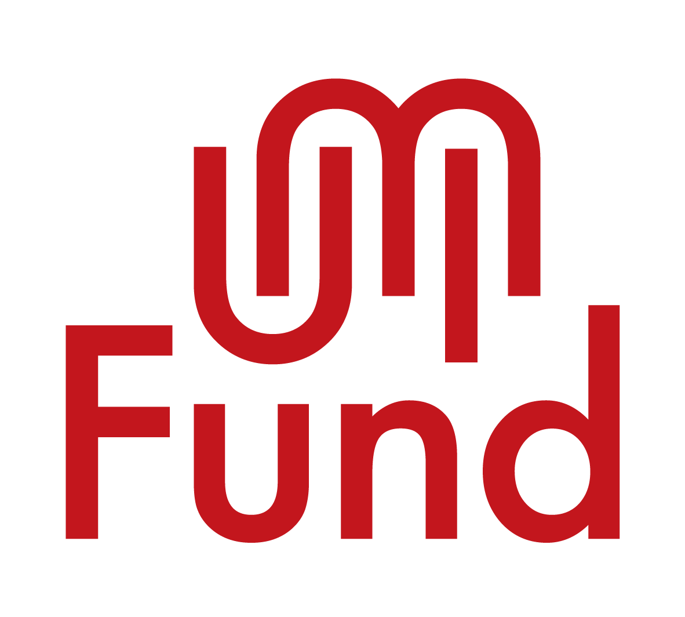

Vocational Training Linked to Circular Economy Needs
We provide hands-on vocational training that responds to real environmental and economic needs, helping participants gain skills in recycling, reuse, upcycling, and sustainable production.
JullyConsult Hub
A youth-focused green skills project supporting practical training, waste-to-wealth production, and inclusive enterprise pathways.
Green Vocational Skills Empowerment equips young people, women, Persons with Disabilities, and vulnerable community members with practical circular economy skills, income pathways, employability, and green enterprise confidence.
About the Project
Green Vocational Skills Empowerment responds to the growing need for practical skills, youth employment, waste reduction, and climate-conscious livelihoods. Many young people and vulnerable community members have the energy and creativity to work, but lack access to training, tools, mentorship, and market opportunities.
Through this project, JullyConsult trains participants in circular product development, cleaner production, and waste-to-wealth innovation. Participants learn how to reuse plastic and textile waste to create marketable products, while also gaining confidence, teamwork, and enterprise readiness.
The project helps young people move from unemployment to productivity, from waste pollution to climate action, and from vulnerability to sustainable income opportunities.

Project Focus
Green Vocational Skills Empowerment equips young people and vulnerable community members with practical skills for circular product development, cleaner production, and sustainable income.
We provide hands-on vocational training that responds to real environmental and economic needs, helping participants gain skills in recycling, reuse, upcycling, and sustainable production.

Participants transform discarded fabrics, plastic bottles, bottle caps, and other waste materials into bags, reusable pads, accessories, artworks, home items, and other eco-friendly products.

The project supports participants with business knowledge, employability skills, mentorship, product quality guidance, and pathways to small green enterprises or income-generating opportunities.

Why This Project Matters
Youth unemployment, poverty, climate change, and waste pollution are deeply connected challenges in many communities. Plastic and textile waste often block waterways, pollute the environment, and worsen flooding, while many young people remain without practical skills or income opportunities.
Green Vocational Skills Empowerment addresses these challenges by turning waste into a resource for training, creativity, and entrepreneurship. The project helps participants gain useful skills, produce eco-friendly products, and contribute to cleaner communities.
By linking vocational training with circular economy solutions, JullyConsult is building a new generation of green skilled youth who can earn, innovate, protect the environment, and support community resilience.
Key Activities
We train young people and vulnerable groups in recycling, reuse, upcycling, sewing, product design, and sustainable production.
Participants learn to convert plastic and textile waste into useful and marketable products.
We teach participants how to reduce waste, reuse materials responsibly, and adopt environmentally friendly production practices.
Participants receive basic training in pricing, branding, packaging, customer relations, savings, and small business planning.
We support confidence-building, teamwork, communication, problem-solving, and leadership skills.
Participants are guided to improve product quality, access buyers, connect with support networks, and explore green enterprise opportunities.
Stories of Change
Through Green Vocational Skills Empowerment, young people discover that waste can become a source of creativity, income, and climate action. Participants learn to use their hands, ideas, and local resources to solve environmental problems while building pathways to employment and enterprise.
For many participants, the project is not only about learning a skill. It is about gaining confidence, discovering purpose, and seeing themselves as contributors to a greener and more inclusive future.
"This training helped me see waste differently. I learned how to turn discarded materials into products people can use, and now I have a skill that can help me earn income."
Our Partners

Green Vocational Skills Empowerment is supported through the EU Youth Empowerment Fund, helping JullyConsult expand youth-focused green skills training, waste-to-wealth production, and inclusive enterprise pathways.

UMI Fund supports the project mission to equip young people and vulnerable community members with practical green skills, product development confidence, and pathways into local circular value chains.
SDG Alignment
 SDG 1: No Poverty
SDG 1: No PovertySupporting income pathways through practical green skills.
 SDG 4: Quality Education
SDG 4: Quality EducationProviding hands-on vocational learning and life skills.
 SDG 5: Gender Equality
SDG 5: Gender EqualityIncluding young women and girls in green skills training.
 SDG 8: Decent Work
SDG 8: Decent WorkStrengthening employability, entrepreneurship, and livelihoods.
 SDG 10: Reduced Inequalities
SDG 10: Reduced InequalitiesSupporting vulnerable youth, women, and Persons with Disabilities.
 SDG 12: Responsible Production
SDG 12: Responsible ProductionPromoting reuse, upcycling, and circular product development.
 SDG 13: Climate Action
SDG 13: Climate ActionReducing waste pollution and promoting community environmental solutions.
Project Gallery
Training sessions, waste-to-wealth production steps, finished recycled products, and participant showcases.


Call to Action
JullyConsult is committed to expanding Green Vocational Skills Empowerment to reach more young people, women, Persons with Disabilities, and underserved community members. With more support, we can provide training tools, materials, mentorship, product development support, and market linkages that help participants build sustainable livelihoods.
Contact
Use this form to register interest in supporting Green Vocational Skills Empowerment, volunteering, partnering, or buying products.